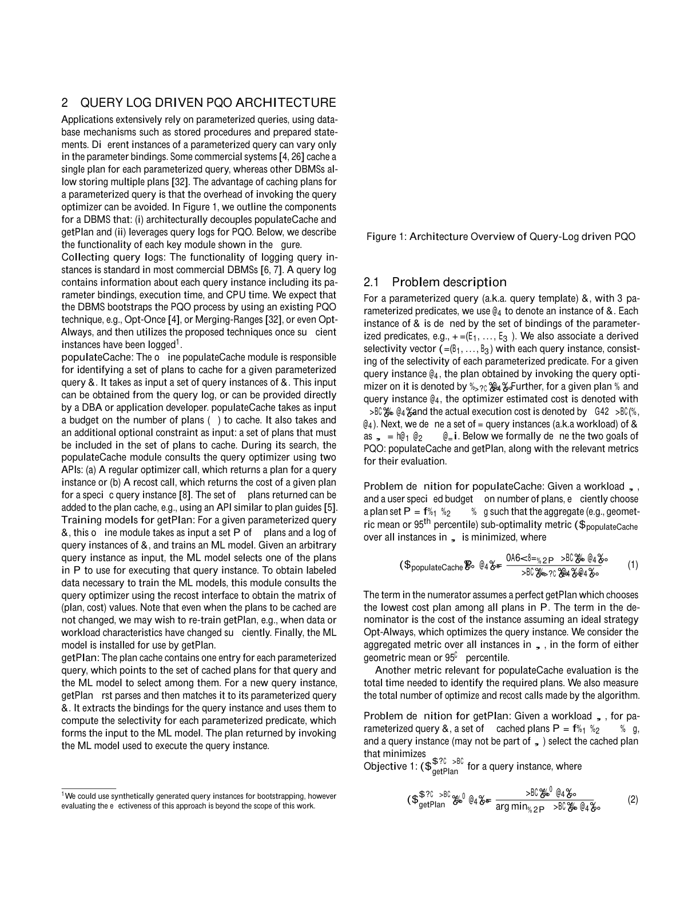
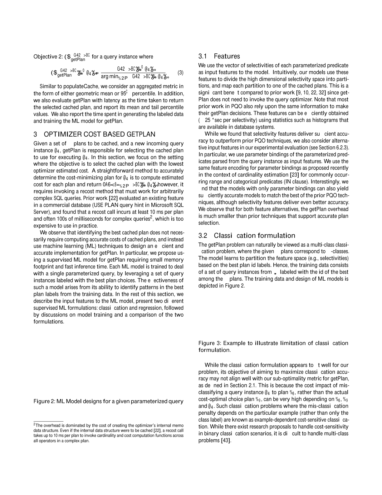
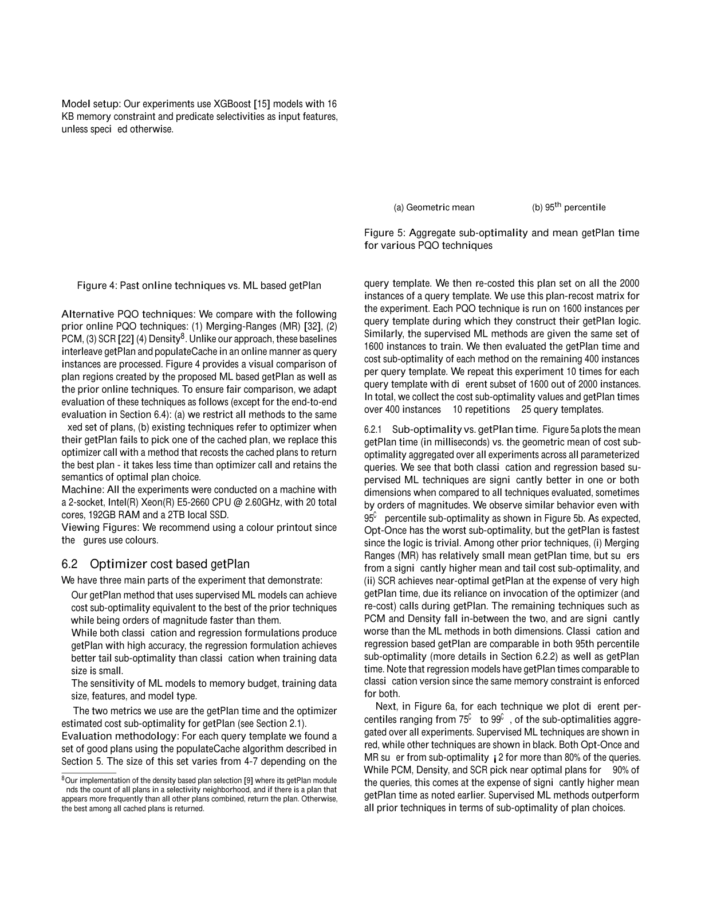
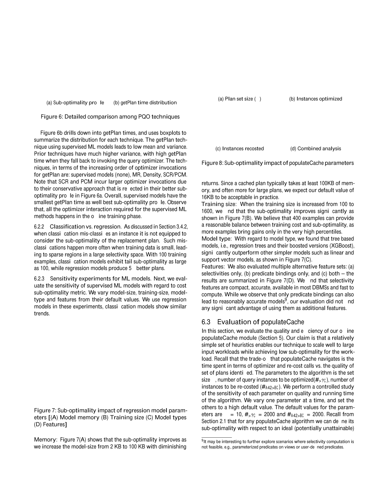
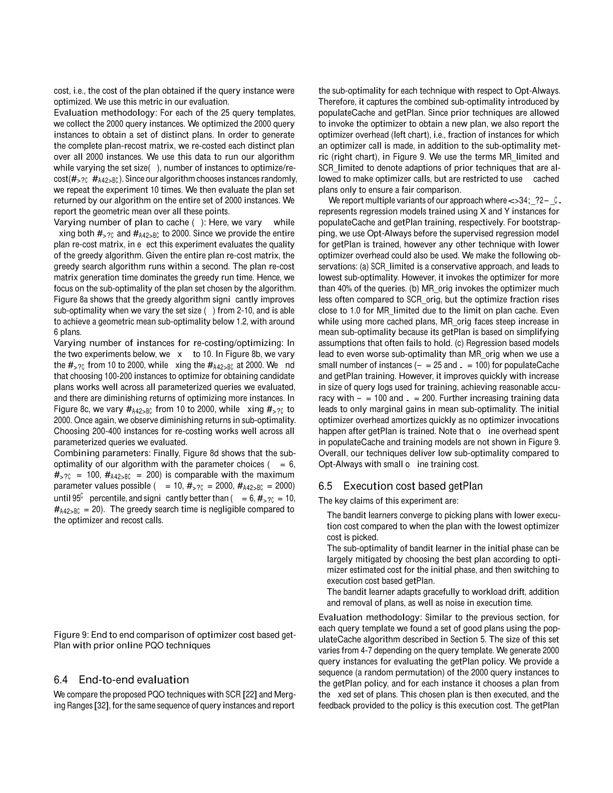
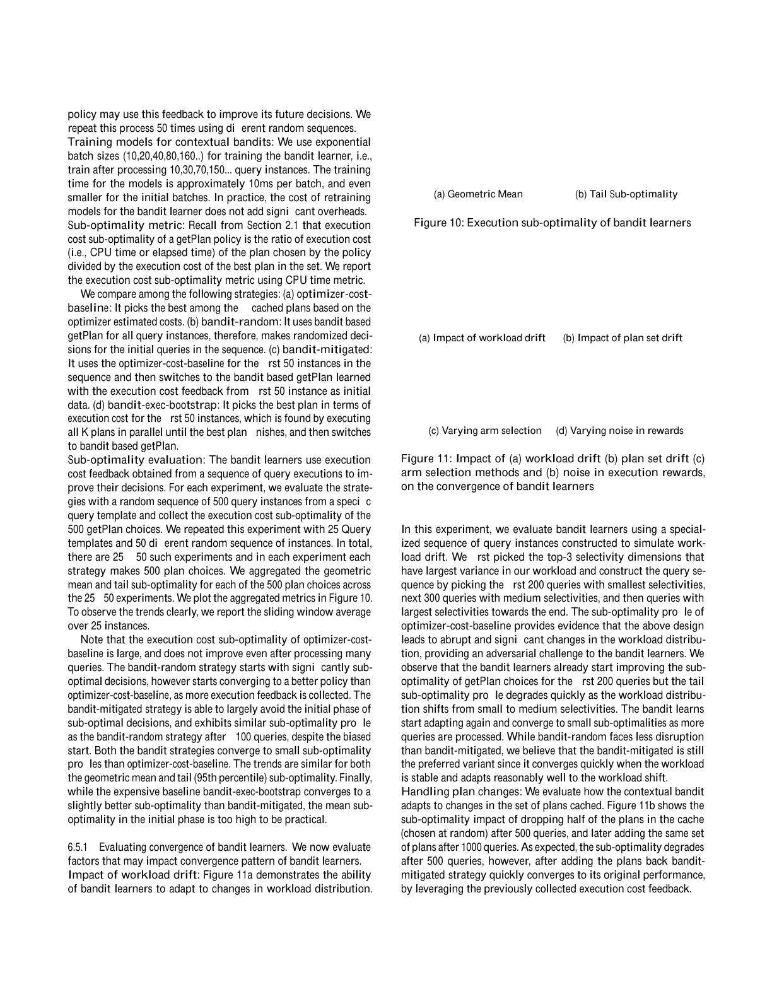

参数化查询优化（PQO）必须解决两个问题：为参数化查询识别相对较少数量的计划进行缓存（populateCache），以及高效地为该参数化查询的任意实例选择要使用的最佳缓存计划（getPlan）。我们的方法将这两个决策解耦。我们将 populateCache 形式化为一个优化问题，目标是识别一组能最小化日志中查询的优化器估计代价的计划，并提出一种高效算法。对于 getPlan，我们利用查询日志训练机器学习（ML）模型，从缓存计划中选择优化器估计代价最低的计划。我们使用基准与真实工作负载中的复杂参数化查询进行了大量实验。我们的 populateCache 算法即使对复杂查询、仅用较少计划，也实现了较低的几何平均次优性（≈1.2），并能良好扩展到大型查询日志。我们的基于 ML 模型的 getPlan 技术的平均延迟（≈210μs）比以前 PQO 技术快一到四个数量级；平均次优性低（≈1.05），95 百分位次优性（≈1.3）比以前技术低 1%–25%。最后，我们提出了一种高效的 getPlan 算法，利用查询日志中的执行时间信息来规避查询优化器代价估计的不准确。
数据库应用广泛使用参数化查询（同一 SQL 语句以不同参数绑定重复执行）。对复杂 SQL 查询，每次都优化的粗暴方法（Opt-Always）消耗大量 CPU 与内存；而另一极端（Opt-Once）只优化首个实例并缓存计划复用，虽最小化优化时间，但缓存计划对后续实例可能任意次优。PQO 是中间路线：相比 Opt-Always 大幅降低优化开销，同时尽量减小执行次优性。PQO 须为给定参数化查询识别一组待缓存计划；新实例到达时高效从中选最佳者。沿用先前工作术语，前者称 populateCache，后者称 getPlan。某 populateCache 技术对某实例的次优性 = 缓存中最佳计划代价 / 优化该实例所得计划（Opt-Always）代价；getPlan 次优性 = getPlan 所选计划优化器估计代价 / 缓存中最佳计划优化器估计代价。整体次优性为二者结合。由于 getPlan 在查询执行的关键路径上，另一关键指标是效率（getPlan 调用耗时）。
绝大多数先前 PQO 工作是在线技术，在 getPlan 的次优性或效率上常至少缺其一：其复用缓存计划的决策基于对计划代价如何在参数化谓词选择性多维空间变化的假设（如单调性），而这些假设对复杂 SQL 常不成立，导致 getPlan 次优性很高；更保守的假设虽次优性更好，却频繁回退到昂贵的优化器或重估（recost）调用，尾延迟高。populateCache 方面，在线技术自适应增删计划，但缺乏可预测性与可调试性，且常需缓存大量计划。
我们提出架构上将这两个模块解耦为独立模块。getPlan 只在缓存计划中选最佳、不回退优化器，立即解决高延迟问题；populateCache 作为离线步骤识别待缓存计划并安装。这带来更好的可预测性与可调试性，也更易于运维，还允许 DBA 凭经验手动加入计划。该架构在数据或工作负载特性显著变化时需调用离线步骤。
现代 DBMS 都有高效的查询实例日志记录能力。我们的方法中两者都利用查询日志：populateCache 在离线步骤用查询日志识别待缓存计划以最小化工作负载的优化器估计代价（第 5 节）；查询日志帮助 populateCache 聚焦于工作负载相关区域。简单贪心搜索随日志实例数良好扩展；即使限制仅缓存少量计划（通常不超过 6 个），算法在 workload 上实现较低几何平均次优性（≈1.2）。getPlan（本文重点）用查询日志与缓存计划集训练监督式 ML 模型高效识别最佳缓存计划（第 3 节），适用于任意复杂 SQL 且对计划代价行为无假设；用决策树或树集成可生成很小的模型（如 16KB）且非常准确，平均延迟 ≈210μs、95 百分位 ≈350μs，比先前技术小一到四个数量级，几何平均次优性 ≈1.05、95 百分位 ≈1.3（比先前低 1%–25%）。
先前 getPlan 工作以最小化优化器估计代价为目标，可能因代价模型简化与基数估计误差导致执行代价次优。我们将"为给定查询与给定缓存计划集设计执行代价感知的 getPlan"问题，比"使优化器代价估计与执行代价对任意查询一致"这一通用问题简单得多。但直接用监督 ML 不现实（获取标注训练数据需对多缓存计划执行查询，代价高昂）。我们提出基于上下文多臂老虎机（contextual bandit）的执行代价感知 getPlan（第 4 节）：bandit 学习者用每个实例执行后获得的执行代价训练，无需为未选计划额外执行。用 Bootstrapped Thompson-sampling 与基于树的回归模型实现，低延迟且选出低执行代价计划；相比按优化器估计代价选最佳，几何平均执行次优性改善 2%、95 百分位改善一个数量级。针对 bandit 初始学习阶段计划次优的问题，我们提出利用查询优化器引导的缓解技术。
图 1 勾勒了架构组件：(i) 解耦 populateCache 与 getPlan；(ii) 利用查询日志。各模块功能：

设参数化查询 $\mathcal{Q}$ 含 $d$ 个参数化谓词，实例 $\tau$ 由其参数绑定定义，并关联派生选择性向量 $\vec{s}=(s_1,\dots,s_d)$。计划 $p$ 在实例 $\tau$ 上的优化器估计代价记为 $\text{cost}_{opt}(p,\tau)$，实际执行代价记为 $\text{cost}_{exec}(p,\tau)$。工作负载 $W=\{\tau_1,\dots,\tau_n\}$。两个目标形式化如下：
populateCache 问题： 给定工作负载 $W$、计划数预算 $K$，选计划集 $P=\{p_1,\dots,p_K\}$ 使聚合（几何平均或 95 百分位）次优性最小：
getPlan 问题： 给定 $P$ 与新实例 $\tau$，选缓存计划最小化：
此外评估 getPlan 延迟（返回所选计划的时间）及生成标注数据与训练模型的时间。
给定缓存计划集与新实例，getPlan 负责选优化器估计代价最低的计划。精确方法是重估每个计划代价取最小，但需 recost 调用（复杂查询常达数百毫秒），不实用。我们观察到识别最佳缓存计划不必精确计算代价，转而用监督 ML 设计高效准确的 getPlan（小内存、快推理）。每个 ML 模型针对单一参数化查询，利用标注最佳计划选择的训练数据学习选择性空间中的模式。

使用各参数化谓词的选择性向量作为输入特征，将高维选择性空间划分并映射到缓存计划——相比先前工作，getPlan 无需调用优化器（特征可用直方图等统计高效获得，≈25μs/选择性）。我们也尝试参数绑定作为替代特征（与基数估计中近期方案相同编码），发现仅用参数绑定也能达到足够准确以匹配最佳先前技术，但选择性特征更准确。两种方式的开销都远小于支持精确选择的先前技术。
getPlan 可视为多类分类问题：$K$ 个计划对应 $K$ 类，模型基于最佳计划 id 标签划分特征空间。但其最大化分类准确率的目标可能与我们的次优性指标不对齐——误分类的代价依赖具体实例与计划（示例相关代价敏感分类），难以处理多类情形。
为每个缓存计划训练独立回归模型，近似其给定输入特征下的优化器估计代价；新实例到来时调用各回归模型预测各计划代价并选最小者（图 2）。该形式化是对精确重估的低开销（快一到两个数量级）近似，且拥有全部计划的代价信息，预期优于仅用最佳标签的分类。
模型训练： 分类与回归所需标注输入数据相同（各缓存计划在实例上的代价）；训练总成本由标注（recost 调用）主导，实际模型训练时间很小（约 100ms），且为离线、可在数据/工作负载显著变化时或计划变更时重调。 分类 vs 回归： 二者次优性都显著优于先前工作；小内存与训练数据下，回归在高位百分位（如 95 百分位）次优性更好，且 getPlan 时间仅略高。
第 3 节监督 ML 技术（同所有先前 PQO 工作）以选优化器估计代价最低计划为目标，但因基数估计误差与代价模型无法表征当前执行环境，可能导致执行次优。将监督学习标签直接换为执行代价不现实（需对每个训练实例用各缓存计划执行）。
我们将 getPlan 形式化为上下文多臂老虎机（CMAB）问题（强化学习范式）：以计划选择为动作、执行代价反馈为奖励，无需初始最优动作、也无需显式纠正次优动作。可通过对第 3 节回归形式化做简单扩展实现。
CMAB 中每时间步策略选一臂（计划）并观测奖励，用奖励影响未来相似上下文的动作。对查询 $\tau$，缓存计划对应臂，选择性（或参数绑定）向量对应上下文，选第 $a_c$ 臂的（负）奖励为该计划执行代价。随实例增多，bandit 趋向选低执行代价计划。
各臂选择策略在探索与利用间权衡；我们用Thompson 采样（TS）的在线自助（bootstrapped）版本。算法 1 描述：每臂维护 $C$ 个监督回归模型；每实例对每个计划随机选一模型预测执行代价，选预测最小者执行；执行后用真实代价更新该计划对应模型，并按 Gamma 分布采样权重加入训练数据。随机选模型实现探索，训练充分后选最小预测代价实现利用。
算法 1. 基于在线 bootstrapped TS 的 getPlan
对每个带上下文（选择性）$\vec{s}_\tau$ 的查询实例 $\tau$：
1. 对计划 $i=1..K$：从 $[1,C]$ 均匀随机选模型 $j$，设 $\hat{c}_i=\hat{c}_{i,j}(\vec{s}_\tau)$。
2. 选动作 $a=\arg\min_i \hat{c}_i$，用计划 $p_a$ 执行 $\tau$ 得真实执行代价 $c_\tau$。
3. 将观测 $(\vec{s}_\tau,c_\tau)$ 加入计划 $p_a$ 对应各模型历史；对每个模型 $j$ 采样权重 $w\sim\text{Gamma}(1,1)$ 以其更新。
避免初始次优决策： bandit 初始随机选计划，经验上优于按优化器估计代价选最佳；但初始阶段明显更差。我们用简单缓解策略：初始用优化器估计代价决策替代随机决策（CMAB 文献常见）。虽引入偏差可能延迟收敛，实证表明基本保留 bandit 收益且避免初始风险。 训练与推理开销： 每计划多回归模型且每批后重训，但用基于树的模型训练极快，开销值得。计划选择决策开销与监督回归相同（每缓存计划评一个模型）。 处理缓存计划集变化： bandit 在新计划加入时自动适应，丢弃计划时忽略对应臂即可。
目标：高效识别少量计划使给定工作负载次优性小。基于查询日志的方法分三阶段：(1) 计划收集——对子集实例调优化器，最坏开销 $n\cdot t_{opt}$；(2) 计划重估——对每个候选计划对每个实例 recost，得 plan-recost 矩阵，最坏 $n\cdot m\cdot t_{recost}$；(3) K 集识别——用矩阵确定预算 $K$ 下的计划集，最坏 $m^K\cdot t_{metric}$。对 $n=2000, m=100, K=5$ 暴力实现超 10 小时（主要花在评估约 7500 万候选 K 集上，且最大代价次优性指标下该问题 NP 完全）。故下文讨论各阶段启发式以降低运行时间。
用简单贪心（类似 [20]）：从空集起每轮加使指标最小的计划直至达 $K$。复杂度 $K\cdot m\cdot t_{metric}$，计算 plan-recost 矩阵后高效。评估中 $m=200,n=2000,K=10$ 时贪心运行不到一秒。
每阶段仅用少量实例子集：随机选约 100–200 实例做计划收集、200–400 实例做重估，质量几乎不损（实例随机顺序下收集计划集大小与可达最佳质量快速稳定）。
监督 ML 假设数据/工作负载不变；显著变化时需重调 populateCache 与重训 getPlan 模型（先生成训练数据再训练），而 bandit 学习者可通过持续重训适应。数据变化可用 DBMS 统计更新触发机制检测，工作负载漂移可用文献技术追踪。
评估：(a) 优化器代价 getPlan（监督 ML）；(b) populateCache 算法；(c) 执行代价 getPlan（上下文老虎机）。
数据库与查询： TPC-DS(100GB)、TPC-H(偏斜,10GB)、真实客户库 REAL1(97GB)，均用 Microsoft SQL Server 2017；共评估 25 个不同参数化查询，过半含复杂 SQL 构造（UNION/INTERSECT、子查询、外连接等）。每查询生成 2000 个不同实例（参数绑定按指数分布选择性随机取值），训练/测试无重叠。 模型： 默认 XGBoost（16KB 内存约束，选择性为特征）。 对比技术： Merging-Ranges(MR)、PCM、SCR、Density 等先前在线 PQO 技术（它们在线交织 getPlan 与 populateCache）。 机器： 2-socket Xeon E5-2660 @2.60GHz，20 核，192GB RAM，2TB SSD。

次优性 vs getPlan 时间（图 5）： 分类与回归监督 ML 在两个维度都显著优于所有评估技术（有时差数量级）。Opt-Once 次优性最差但最快；MR 平均 getPlan 时间较小但次优性高；SCR 近最优但 getPlan 时间极高（依赖优化器/recost 调用）；PCM、Density 居中且两维都显著差于 ML。分类与回归在 95 百分位次优性与 getPlan 时间上相当。 百分位分布（图 6）： Opt-Once 与 MR 在超 80% 查询上次优性>2；PCM/Density/SCR 对约 90% 查询近最优但 getPlan 时间高；监督 ML 次优性最优且 getPlan 时间最低、方差最小（全部优化器交互发生在离线训练）。

分类 vs 回归（6.2.2）： 训练数据小时分类误分类更频繁，尾次优性可达 100，回归则好约 5 倍。 敏感性（图 7）： 模型内存 2KB→100KB 次优性改善（16KB 默认可接受）；训练量 100→1600 显著改善（400 例为合理平衡）；树模型（XGBoost）显著优于线性/SVM；选择性特征紧凑准确，参数绑定作额外特征无显著优势。

图 8 评估参数敏感性：计划集大小 $K$（2–10）下贪心在约 6 个计划时几何平均次优性低于 1.2；优化实例数 #opt（100–200 足够）、重估实例数 #recost（200–400 足够）均呈收益递减；组合参数 $(K=6,\#opt=100,\#recost=200)$ 与最大参数 $(K=10,\#opt=2000,\#recost=2000)$ 在 95 百分位前次优性相当，且远优于 $(K=6,\#opt=10,\#recost=20)$。
图 9 对比 SCR 与 MR，就 Opt-Always 报告各技术次优性，并报告优化器开销（调用优化器的实例比例）。观察：(a) SCR_limited 最保守、次优性最低但超 40% 查询调优化器；(b) MR_orig 调优化器少但 MR_limited 因计划缓存限制优化比例近 1.0，且因简化假设常不成立而平均次优性陡增；(c) 回归模型在小训练量（populateCache 25、getPlan 100）时次优性比 MR_orig 更差，但随训练日志增大快速改善（100/200 即合理），之后增益边际；初始优化器开销在 getPlan 训练后无调用即快速摊销。总体而言，本技术在低离线训练成本下相比 Opt-Always 实现低次优性。
关键论断：(1) bandit 学习者收敛到比"选优化器估计代价最低计划"更低的执行代价；(2) 初始阶段用优化器估计代价选最佳、之后切换到执行代价 getPlan，可大幅缓解初始次优性；(3) bandit 优雅适应工作负载漂移、计划增删与执行时间噪声。
评估：每模板用 populateCache 得 4–7 个计划，生成 2000 实例序列提供给 getPlan 策略，执行后反馈执行代价；重复 50 次不同随机序列。对比四种策略：optimzer-cost-baseline、bandit-random、bandit-mitigated（前 50 用 baseline 后切换）、bandit-exec-bootstrap（前 50 并行执行全部计划得最佳后切换）。图 10 显示：baseline 次优性大且不随查询增多改善；bandit-random 初始次优但随反馈收敛更好；bandit-mitigated 基本避免初始次优、约 100 查询后与之相似；两者都收敛到比 baseline 小得多的次优性；bandit-exec-bootstrap 初始均值过高不实用。

收敛因素（图 11）： (a) 工作负载漂移——构造选择性由小到中到大的对抗序列，bandit 在漂移后能重新适应并收敛；(b) 计划集漂移——500 查询后丢弃一半计划次优性升，1000 后加回则 bandit-mitigated 快速回到原性能；(c) 臂选择——TS 与 UCB 优于 ε-greedy，选 TS（内存/训练开销更低）；(d) 执行时间噪声——即使注入显著噪声，bandit 仍随时间改善，仅收敛变慢。
getPlan 先前工作： Merging Ranges、PCM、Ellipse、density 聚类、SCR 等，但有重要局限：假设计划代价函数线性/单调（对复杂 SQL 不成立）、且在线中 getPlan 与 populateCache 交织导致常回退昂贵优化器调用、难调试。我们解耦二者并用离线训练的 ML 模型，对计划代价函数无假设，getPlan 时间稳定小。 populateCache 先前工作： 找单一鲁棒计划能力受限；多数聚焦全选择性空间最优计划集（plan diagrams 表明≈10 个计划足以近最优，且找小计划集为 NP-hard，贪心是合理替代）。先前工作在大维空间枚举所有计划代价高昂；在线 PQO 的 populateCache 是机会式的。我们的方法是中间路线：用查询日志在相关区域引导候选生成、识别少量计划播种缓存。 ML 用于查询优化： 近期许多尝试（索引选择、旋钮调优、基数估计等）；最接近的是用定制神经网络为即席查询预测执行代价，而我们为单个参数化查询选少量计划之一，是简单得多的问题，且用低开销模型。
我们重访数据库中参数化查询优化的重要问题并提出三个关键思想。第一，倡导将"识别缓存哪些计划（populateCache）"与"为给定实例从缓存中选哪个计划（getPlan）"解耦。第二，开发同时利用历史查询日志的技术，适用于任意复杂 SQL 而无计划代价行为假设；populateCache 用高效可扩展算法选少量计划以最小化日志中查询的聚合次优性；getPlan 用查询日志训练的 ML 模型同时实现低延迟与低次优性。第三，提出利用查询日志中执行时间信息（而非优化器估计代价）的 getPlan 新形式化，以规避优化器代价估计的不准确；该方案适配强化学习中的上下文老虎机，初步实验显示相比传统 PQO 最佳方案有更低执行代价。